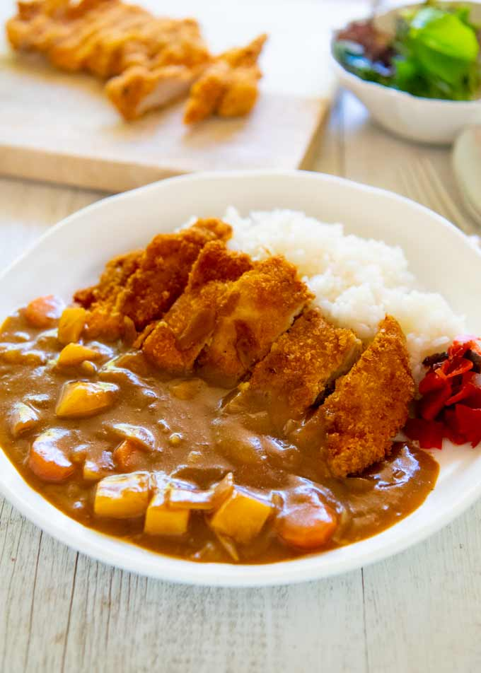
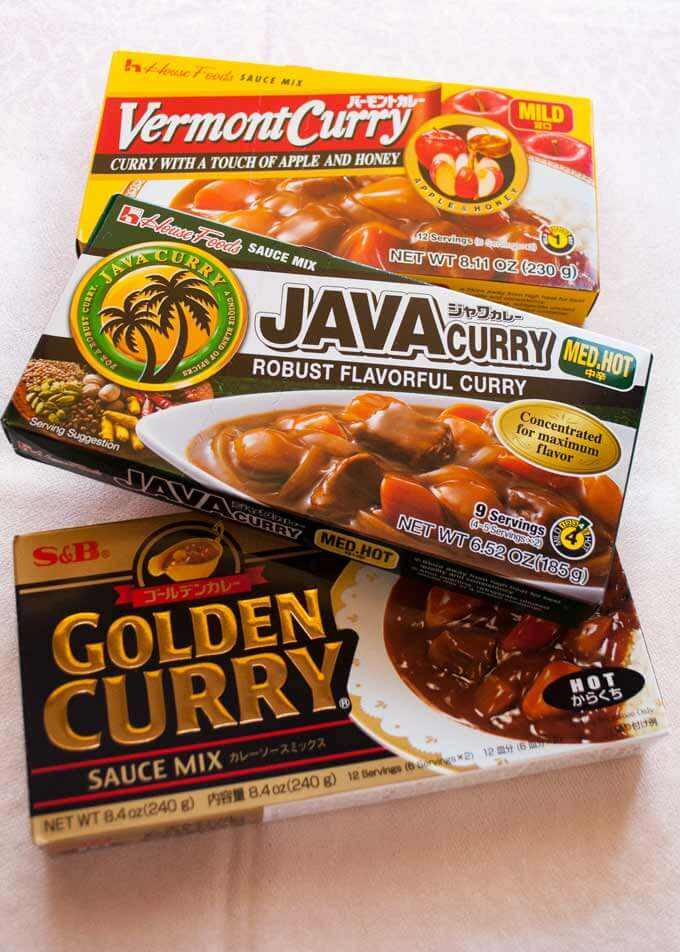

Katsu Curry
Home

Description
It is not an exaggeration to say that Japanese curry rice (カレーライス, pronounce it as ‘karē raisu’) is the national home cooking dish. When Japanese people say ‘having a curry tonight’,
it is the Japanese curry that is made from the store-bought block of curry roux.
Ready-Made Curry
The most popular store-bought curry roux in Japan is called Vermont Curry. It is one of the many curry roux products made by House Food Corporation. When you say ‘Vermont Curry’, everyone knows that it is House Vermont Curry.
The roux contains apple and honey to reduce the spiciness so that even little kids can eat curry.
Apparently, the name ‘Vermont’ came from the state of Vermont in the USA, which was known for folk medicine with apple cider vinegar and honey.
At the time of the first TV commercial, this folk medicine was well known and popular, so House Foods just borrowed the name ‘Vermont’.

Many varieties of curry roux products are available now (see a few examples in photo above) and each household has its favourite curry roux.
The roux makes the curry-making so easy. Sauté the meat and vegetables, add water and cook them, then add the roux. Viola!
You can buy Japanese curry roux at Japanese/Asian grocery stores as well as most supermarkets.
Ingredients (tbsp = 15ml, cup = 250ml)
Curry
- 400g / 0.9 onion sliced into 1cm / ⅜" wide pieces
- 250g / 0.6lb potato cut into 1.5cm / ⅝” cubes
- 100g / 3.5oz carrot sliced to 7mm / ¼” thick pieces
- 1 tbsp oil
- ½ packet of 230g / 0.5lb House Vermont Curry
- 800ml / 1.7pt water
- 4 cups cooked rice (hot)
- 4 Chicken Cutlets cut into 2.5cm / 1” wide strips
Cooking Steps
- Add oil to a pot and heat over medium high heat.
- Add onion and sauté for a few minutes or until the onion becomes translucent and edges start getting slightly burnt.
- Add potatoes and carrots into the pot and stir for a couple of minutes or until the surface of the vegetables starts getting cooked.
- Add water and turn the heat up to bring it to a boil. Then reduce the heat to medium low and simmer for about 7 minutes or until the vegetables are nearly cooked through (note 4).
- Break the curry roux cake into small blocks along the lines and add them into the pot. Stir gently to blend the curry roux.
- Reduce the heat to low, place a lid on and cook for about 10 minutes or until the curry roux is completely dissolved. Stir occasionally as the curry tends to stick to the bottom of the pot.
- Check the consistency of the sauce. It should be like béchamel sauce. If it's too thick, adjust with some water. If too thin, cook further without the lid. It will thicken when cooled down as well.
- Turn the heat off.